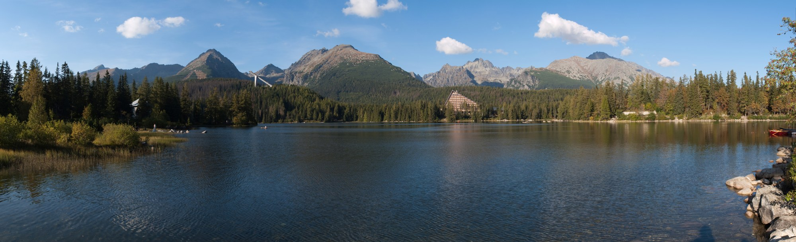

דלגו לתוכןTATRY/יומן מסע משפחתי
· SUMMER 2027עומרי וליאת · יובל 5 ואיתי 7 · 9 לילות
הטטרה שלנו.
ההרפתקה מתחילה כאן.
9–18 באוגוסט 2027 · Hotel Hubert, Gerlachov

ŠTRBSKÉ PLESO / HIGH TATRAS10 ימים בהרים · אוגוסט 2027
נבדק ב־15.09.2026 • שעות ומחירים שפורסמו כעת הם בסיס לתכנון; פרטי אוגוסט 2027 טרם אומתו.